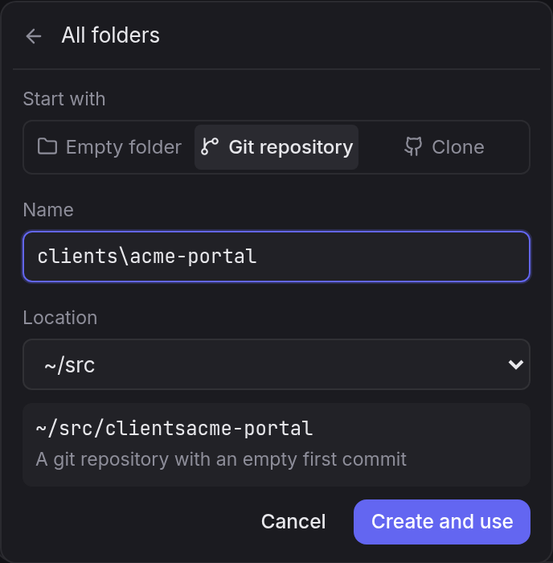
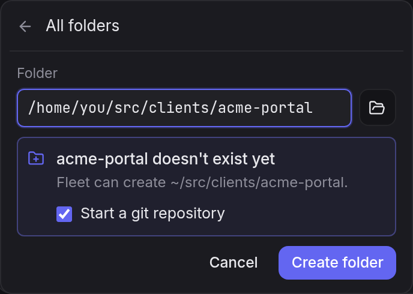
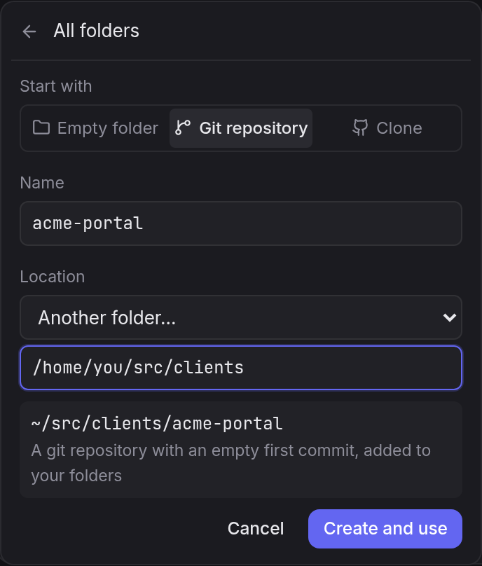
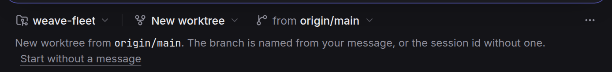
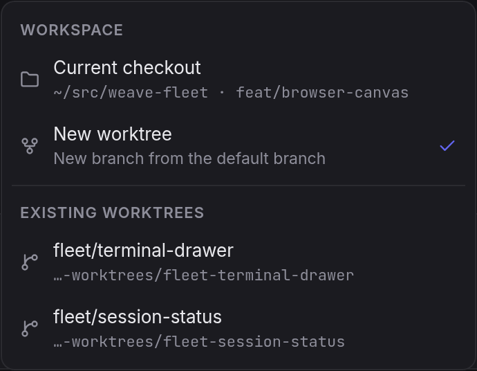
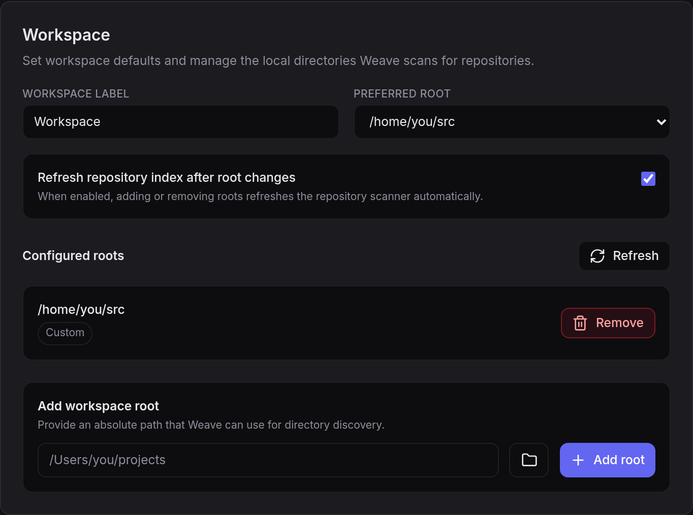

Starting a session asks one question: where should the agent work? Today the answer goes through five names for overlapping ideas, and two ways to make a new folder that follow different rules. This page shows what that looks like now, a smaller set of words, and three ways to fix creating folders.
Screenshots of the current build in mock mode. Nothing here is broken on purpose; each piece made sense when it was added, but together they don't add up to one idea.

Silent change A folder inside a folder can't be made here.
Typing clients\acme-portal drops the separator without a word; the preview reads
~/src/clientsacme-portal. / goes the same way.

Two rules Browse for a folder… can make it. The same nested path typed under Browse offers "Create folder". Two create flows, two sets of rules, and the one that works is labelled as a way to find folders.

Typing paths Location lists only the top folders.
To put a project inside ~/src/clients you pick "Another folder…" and type the full parent
path. There's no way to browse to it.

Same name, two things Folder chip and project chip.
A folder called weave-fleet sits next to a project called "Weave Fleet" (it shows on the
right once you pick one). Nothing says one is a place on disk and the other a sidebar group.

One word, three meanings "Workspace" heads the checkout menu here, names the Settings page for scanned folders, and is a server concept for a session's working copy.

Unused Settings → Workspace. "Workspace label" and "Preferred root" are saved in the browser and read by nothing. "Configured roots", "workspace root" and "directory discovery" are the folders the menu calls "your folders".
$ git init hint: Using 'master' as the name for the hint: initial branch. This default branch hint: name is subject to change. … $ git branch --show-current master
Old default New repositories start on master
whenever git's init.defaultBranch isn't set, because Fleet runs a plain git init and git's
built-in default is still master.
Every option below uses these. "Workspace" leaves the interface entirely; nothing a person picks is called that.
| Where | Today | Proposed |
|---|---|---|
| Settings page | Folders | |
| Settings list | Locations, Add a location | |
| Settings fields | Removed (unused) | |
| Folder menu | Location | |
| Worktree menu header | Checkout | |
| Project chip | Name only, at the far right | icon + "Project" tooltip |
Keep the menu as it is. Make the form do what it looks like it does.
clients/acme-portal or clients\acme-portal
makes both folders. Characters that can't be in a name are named inline, never dropped.main.main with an empty first commit"New folder…" and "Browse for a folder…" become one row, Open or create a folder…, which opens a single path box that lists what's on disk as you type, like a shell's Tab completion. Clone gets its own row because it takes an address, not a path.
~/src/), so most people only type a name./ or \ to go into a folder; Tab
completes the highlighted one. Repositories open on click; plain folders go in.clients/acme-portal in the main
menu and the Create row offers exactly that.The list is grouped by location and shows folders inside folders, plain folders included. Hover any folder and a + makes a new one inside it, typed in place, like a file explorer.
main · Alt+Enter: empty folderThese go in whichever option you pick.
mainFleet runs git init -b main, or uses your
init.defaultBranch if you've set one. Changeable in Settings → Folders.Fleet lists the repositories it finds in these locations, up to three folders deep. New folders go in the one you used last.
init.defaultBranch of its ownweave-fleet
and the other way round. Left out of this proposal unless you want it.